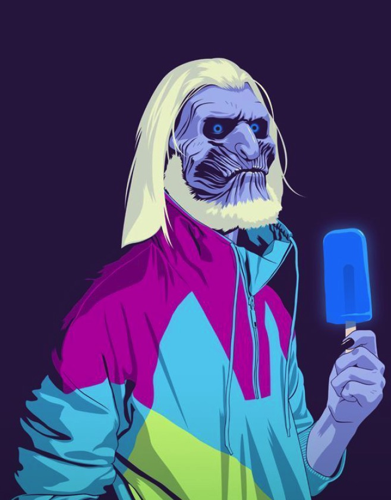

我的名字
公共高级营养师
泪眼晶莹，他望着不得不诀别的乡土隐没在云雾里……早先他不是渴望离乡的吗？——是的，但一朝真的走了出来，又觉得心碎肠断。人非禽兽，怎么能远离故土而无动于衷呢？苦也罢，乐也罢，你总是跟它一平生活过来的；乡土是你的伴侣，是你的母亲：你在她心中睡过，在她怀里躺过，深深的印着她的痕迹；而她也保存着我们的梦想，我们的过去，和我们爱过的人的骸骨。克利斯朵夫又看到了他以往的岁月，留在那边地上地下的亲爱的形象。便是他的痛苦也和他的欢乐一样宝贵。弥娜，萨皮纳，阿达，祖父，高脱弗烈特舅舅，苏兹老人，——一霎时都在他眼前显现了。他总丢不开这些亡人（因为他把阿达也算作死了）。想其他的母亲，他所爱的人中唯一活着的一个，如今也被遗弃在那些幽灵中间，他简直悲不自胜。他认为自己的逃亡太可耻了，几乎想越过边境回去。他已经下了决心：要是母亲的回信写得太痛苦的话，他便不顾一切的回去。倘若接不到回信，或是洛金见不到母亲，那末，他也预备回去。